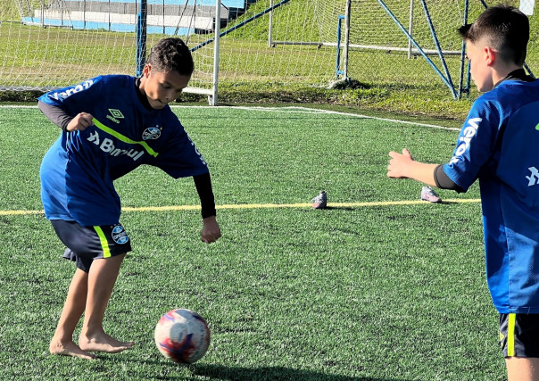

DESENVOLVIMENTO METODOLÓGICO
Para este trabalho, utilizaremos a metodologia de ensino tradicional, onde basicamente a aprendizagem vem da exposição do conhecimento, por meio da ação dos profissionais do projeto. Segundo Aragão (1995) o ensino tradicional concebe que para ensinar basta saber um pouco do conteúdo específico e utilizar algumas técnicas pedagógicas. Além dessa metodologia, implantaremos também, ao final de cada bimestre escolar, medidas avaliativas de nível de qualidade para que os professores do projeto fiquem cientes do desempenho dos alunos dentro e fora do projeto. Essas medidas avaliativas observarão o boletim escolar em reunião com os pais e/ou responsáveis. Dessa forma, motivaremos os alunos a criarem mais responsabilidade com seus estudos e afazeres.
Também, trabalharemos o aspecto crítico, pois dentro dele é possível, uma vez que se trata de um esporte, com regras e com uma grande variação de atitudes viáveis de serem tomadas por cada um durante o jogo. As regras poderão ser discutidas em grupo e modificadas, assim como as atitudes podem ser analisadas e debatidas. Com isso e ainda com a análise de outras questões, como o preconceito (quanto ao nível de habilidade, raça, sexo etc.). A convivência em grupo estará sendo aprendida e a contribuição para o desenvolvimento moral e social será grandiosa para toda a vida. Isto posto, segundo Lipman (1995) se o pensamento crítico pode produzir uma melhoria na educação, será porque aumenta a quantidade e a qualidade do significado que os alunos retiram daquilo que leem e percebem., e que expressam através daquilo que escrevem e dizem.
Atividades propostas
Propõe-se as atividades coletivas da prática de futebol e exercícios funcionais com aulas de duração de 1 (uma) hora e 30 (trinta) minutos, 2 vezes por semana cada turma, para a melhoria do desempenho em campo, fundamentos do treinamento, como, passe, chute, domínio e drible, além de estar contribuindo para a melhoria do desempenho social e relacional dos alunos do projeto.
Estrutura Legal
Para darmos início ao projeto será necessária a inscrição, juntamente à administração do Gama-DF, para a concessão do alvará de funcionamento, tendo em vista um bom espaço, com o devido aconchego para os alunos e responsáveis, com boas instalações, como por exemplo, as traves e redes em bom estado, o gramado revitalizado, e que o local esteja apto para a inspeção. Da mesma forma, é de suma importância que tenhamos um profissional de Educação Física, que esteja ativo no Conselho Regional de Educação Física – CREF, como responsável do Projeto, tanto no auxílio de atividades, quanto na sua parte técnica.